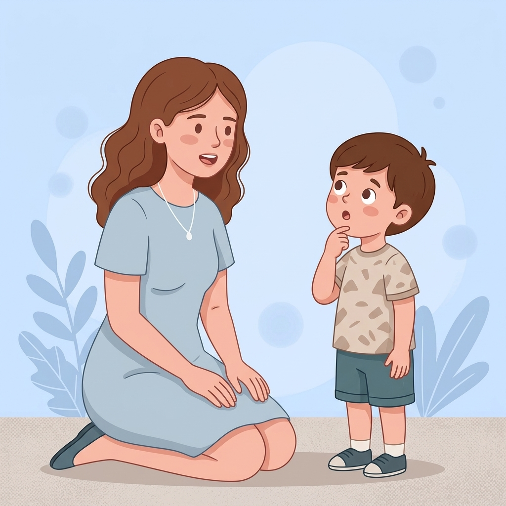
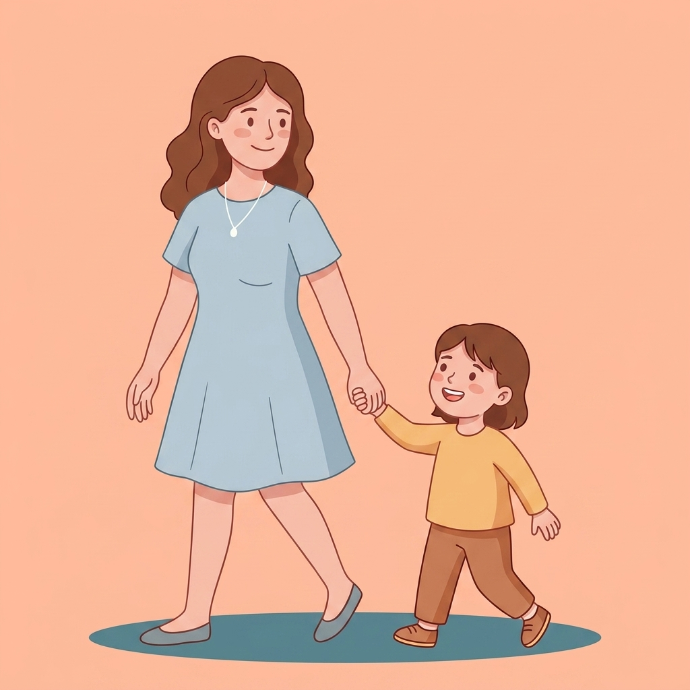

חוק 3 השכבות
הילד שאל שאלה שהשאירה אתכם ללא מילים?
כדי ליישם את הדיברה השלישית ולדייק את התשובה שלכם, פיתחנו כלי תקשורתי פשוט ויעיל: חוק 3
השכבות.
הוא מונע מכם להתפזר, להילחץ או להעמיס מידע מעבר ליכולת העיבוד של הילד, ומאפשר לכם לענות בדיוק
במידה הנכונה.
שימו לב, אינכם חייבים לעבור את כל 3 השכבות במהלך שיחה אחת.
לחצו על הטבעות כדי להכיר את העקרונות של כל אחת מהן!
הכירו את 3 השכבות

שכבה 1: העובדה היבשה
״מה קרה?״ – מענה עובדתי, פשוט וישיר
השכבה הראשונה עוסקת במתן תשובה עובדתית לשאלה של הילד. המטרה היא לענות בשפה פשוטה, אובייקטיבית וללא דרמה רגשית — בדיוק במידה שתואמת את הסקרנות המיידית של הילד. אין צורך להרחיב מעבר למה שנשאל. תשובה קצרה, מדויקת ומותאמת לגיל נותנת לילד את התחושה שהוא מקבל מענה אמיתי, בלי להציף אותו במידע מיותר.
שכבה 2: הרגש והנורמליזציה
״איך מרגישים?״ – מתן לגיטימציה ונרמול
השכבה השנייה עוסקת בעולם הרגשי של הילד. כאן אנחנו נותנים לגיטימציה מלאה לרגשות — גם אם הם מורכבים או מפתיעים. המטרה היא לנרמל את החוויה הרגשית בעזרת שיתוף רגשי מקשר: ״גם אני לפעמים מרגיש/ה ככה.״ זה מעביר לילד מסר חד וברור שהוא לא לבד, שהרגש שלו תקין ושיש מבוגר שמבין אותו ומחזיק עבורו את המרחב הרגשי.

שכבה 3: העוגן והביטחון
״מה איתי?״ – החזרת תחושת היציבות
השכבה השלישית עוסקת בביטחון ויציבות. אחרי שעסקנו בעובדה וברגש, הילד צריך לדעת שהוא בטוח — עכשיו ובעתיד. כאן אנחנו שומרים על השגרה, מחזירים את תחושת הסדר ונותנים הבטחה מוצקה: ״אני כאן, ואנחנו ביחד.״ העוגן הזה הוא שנותן לילד את הכוח לחזור לשגרה שלו עם תחושת ביטחון ושייכות, גם כשהמציאות סביבו מורכבת.
שאלון מסכם: בחנו את עצמכם
בואו נראה אם למדתם כיצד ליישם את חוק 3 השכבות מול הילדים: